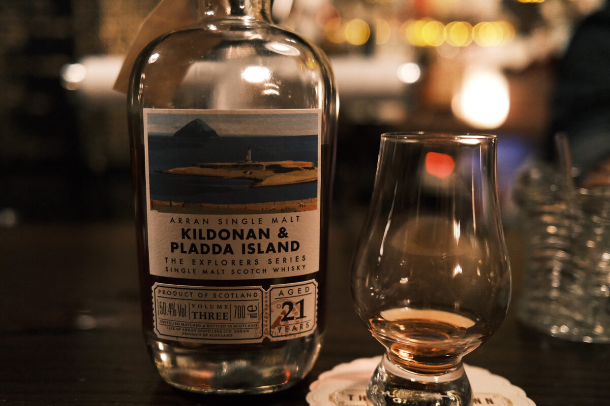

Arran "Kildonan & Pladda Island" 21 years 50.4% (assorted fortified wines)
Old Arran – one of their Explorer series (no relation to the Claxton’s). Scary colour.
Colour Ruby.
Nose Fruit juice – blackcurrant, grapes. Fruit jellies and roll ups. Big sweet wine influence. Marshmallows and berry jams. Biscuits, lamingtons. One for dessert. Brown sugar and toffee. With water, woodier, citrus, lemon peel.
Palate Super juicy, as promised. Dried fruits, raisins, sultanas aplenty, thick and syrupy. A little walnut, toffee, caramel. Blackberries. Oak, oak spices. With water, the malt comes out to from hiding. A little astringency, stemmy, digestif-esque. Milky texture.
Finish Dried fruits, berry jams, strawberry milk. Cinnamon and oak, woody. Leathery. With water, burnt toffee.
Comments Big wine forward dram. Takes water well, and interestingly: age and malt appear and smack you in the head. 87/100.

Posted by Dominic on 15 Jun 2021